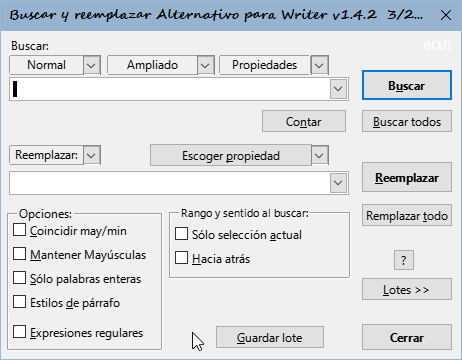
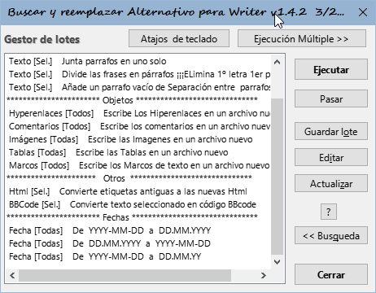
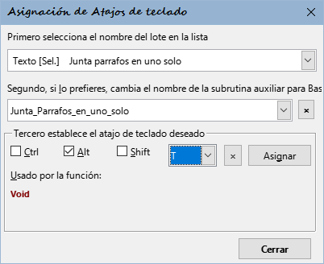
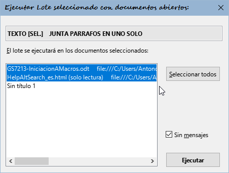

Diálogo buscar y reemplazar alternativo para Writer
˳˳˳
Nota del traductor - Los modificadores de formato -- explicados en la ayuda: \C{ejemplo} etc... pueden ocasionar errores. Úselos con precaución)
Qué ofrece esta extensión en comparación con el diálogo estándar de Búsqueda de Writer:
- Selección rápida de expresiones regulares (sencillas y complejas) ya preestablecidas
- Cómputo de ocurrencias de la expresión buscada con el botón Contar
- En la búsqueda o reemplazo, el texto puede contener varios párrafos
- En la búsqueda o reemplazo, el texto puede contener caracteres en formato hexadecimal o decimal
- Búsqueda de saltos de página o columna manuales y posibilidad de remplazo (añadir o eliminar)
- Búsqueda de bloques de párrafos delimitados por dos marcas de texto
- Posibilidad de ampliar o reducir la selección del texto encontrado por un número específico de caracteres
- Se pueden efectuar varias búsquedas y sus correspondientes reemplazos en un único paso
- Búsqueda en: Comentarios, Campos, Referencias cruzadas y marcas de referencias por su contenido, nombre o marca de destino. También se pueden insertar
- Búsqueda en Tablas, Imágenes y Marcos de texto por su nombre; es posible sustituirlos por cualquier texto, contenido de texto, nombre de objetos o contenido del portapapeles
- Búsqueda e inserción de Notas al pie y Notas finales. Es posible seleccionar de una vez los textos de todas las notas al pie o notas finales y asignarlas cualquier estilo
- Búsqueda de formato similar o del mismo formato del texto bajo de la posición del cursor
- Se pueden buscar varias expresiones, encerrándolas entre paréntesis () y reemplazarlas utilizando \1, \2 ... hasta \9 en la cadena de texto de reemplazado
- Se pueden usar propiedades de estilos de párrafo, de carácter, de lista y URLs de Hiperenlaces tanto en la búsqueda como en el reemplazo
- El texto encontrado se puede reemplazar con contenido del portapapeles, un contador con el número de reemplazos o número de página donde se encontró
- Los «reemplazos» se pueden redirigir a otro archivo de texto, manteniendo el original sin cambios
- Modo por lotes: Se pueden guardar y cargar parámetros de búsqueda y reemplazo; Es posible guardar varias búsquedas y reemplazos en bloque para ejecutar esa secuencia en uno o varios documentos de texto (si están abiertos)
- Diálogo para asignación de atajos de teclado a operaciones por lotes guardadas
- Mantener mayúsculas - Si se encuentra texto que empieza con una mayúscula, la sustitución empezará con mayúscula.
- Búsqueda por estilos de párrafo, carácter o lista, en el desplegable «Propiedades» con posibilidad de elegir un estilo desde listas
- Búsqueda por similitud o coincidencia con el formato del texto bajo el cursor
- Búsqueda y remplazo de Marcadores
- Abra el diálogo Herramientas > Personalizar > Teclado
- En el campo Categoría abra consecutivamente Macros de la aplicación > Mis macros > AltSearch > AltSearch
- En el campo Función, seleccione y Asigne los siguientes atajos:
- _AltSearch Ctrl+H (abrir el diálogo)
- _FindNext Ctrl+Alt+H (buscar siguiente ocurrencia de la última búsqueda (diálogo cerrado)
- _FindBack Ctrl+Mayús+H (buscar anterior ocurrencia de la última búsqueda (diálogo cerrado)
Sugerencias para asignar atajos de teclado de uso más frecuente:
También puede asignar atajos de teclado directamente desde el diálogo AltSearch. Consulte Modo por lotes más adelante.
Listas desplegables sobre el campos de expresiones de búsqueda («Buscar»)

Diálogo principal de AltSearch
Contienen expresiones regulares sencillas, expresiones Ampliadas o parámetros de propiedades. Tras elegir una entrada los parámetros se pasan al campo de búsqueda. Se pueden insertar de varios modos: al principio, al final, en la posición del cursor o remplazando al texto del campo de búsqueda. Al mismo tiempo se activa la opción «Expresiones regulares».
A. Lista desplegable «Normal»
Contiene algunas expresiones regulares útiles. Puede encontrar su descripción en la ayuda de LibreOffice Lista de Expresiones Regulares.
Limitaciones: La sintaxis usada en expresiones regulares no es totalmente compatible con la original de OpenOffice/LibreOffice. Los problemas surgen especialmente con búsquedas, al usar comodines * + ? {n,n} justo después de expresiones entre paréntesis ().
Por ejemplo, (Mi)?ster no se encontrará (sin embargo, cuando se usa Contar devolverá la cuenta correcta - esta función sólo está usando el modo compatible).
Además, si se buscan expresiones del tipo (.*)algo o (.+)algo, se encuentra la ocurrencia más corta que cumpla la condición, contrariamente al estándar de Ooo/L.O. que encontrará la ocurrencia más larga. Si es necesario conservar la compatibilidad, se puede delimitar completamente la expresión de búsqueda con un par de paréntesis extra: ((Mi)?ster). Con ello se perderá, por supuesto, la oportunidad de citar la expresión en el reemplazo como la referencia, \# donde # es el número de referencia (max. 9) de la expresión. También es imposible usar al mismo tiempo referencia a la expresión (entre paréntesis () ) en la expresión de búsqueda y en la de reemplazo. Vea también subexpresiones.
Otros parámetros de comodines especiales:
\l - representa cualquier carácter alfabético; es lo mismo que [:alpha:]{1,1}.
\d - representa cualquier dígito; es lo mismo que [0-9].
\p - representa la marca de final de párrafo,
en contraste con la búsqueda extándard de Writer $, también representa un párrafo vacío. Se pueden usar los comodines +, *, {min,max} con $.
\p{1,} - buscará el final de párrafo más cercano seguido de un bloque ilimitado de párrafos vacíos. Es lo mismo que \p*.
\p{2,4} – buscará el final de párrafo más cercano seguido de al menos uno, máximo tres párrafos vacíos; entonces serán en total como mínimo 2 y como máximo 4 párrafos uno tras otro.
Limitación: Lento al usarse por separado. Algunas veces hay problemas al buscar hacia atrás.
\xhhhh – permite introducir el código de carácter con un número hexadecimal (hhhh)
\#ddddd - permitie introducir el código de carácter con un número decimal (ddddd)
Si el siguiente carácter no es un dígito, no es necesario llenar las 5 posiciones de ddddd. En otro caso hay que rellenar con ceros a la izquierda.
\c – búsqueda de salto de columna manual.
Limitación: Lento al usarse por separado.
\m – búsqueda de salto de página manual.
Limitación: Lento al usarse por separado. Si se usa una subexpresión (), el parámetro \m debe estar al principio de la cadena de búsqueda y no puede estar solo: \m(...) pero no (...)\m.
\s - representa cualquier espacio: espacio, espacio de no separación, tabulador o salto de linea manual. Es lo mismo que [\xA0\x9\xA].
\S – representa un espacio de no separación (\x00A0 o \#160 )
B. Lista desplegable «Ampliado»
[::BigBlock::] - busca bloques de párrafos (longitud ilimitada), delimitados por algún texto conocido
inicio[::BigBlock::]fin - en primer lugar busca inicio y tras encontrarlo busca fin. Si encuentra ambos, se selecciona el bloque completo.
En la cadena de reemplazo se pueden usar los parámetros \b, &, \e para insertar el contenido de inicio, bloque de párrafos encontrado, o fin
Limitación: En las cadenas inicial o final, no es posible usar el signo || para búsquedas y reemplazos múltiples.
[::Grow n1,n2::] - la selección del texto encontrado se expandirá n1 caracteres a la izquierda y n2 caracteres a la derecha
[::Grow -1,-1::]texto – si se encuentra la palabra texto sólo seleccionará ext.
Limitación: es necesario usar siempre [::Grow... al principio de la cadena de búsqueda y tras ella la expresión de búsqueda. Si n1 o n2 son números negativos, puede resultar (dependiendo del tamańo y contenido de la expresión de búsqueda) que la siguiente búsqueda encuentre cíclicamente en el mismo lugar.
texto1||texto2||texto3||… - búsqueda y reemplazo múltiple en un paso
Ańada el signo || al final de las expresiones de búsqueda y de reemplazo para delimitar las búsquedas y reemplazos parciales.
Buscar: texto1||texto2||texto3
Reemplazar con: cambio1||cambio2||cambio3
Al efectuar la búsqueda texto1 será reemplazado por cambio1, al continuar buscando texto2 será reemplazado con cambio2 etc.
Limitación: No se puede usar el parámetro [::BigBlock::] con ||, como tampoco se pueden usar subexpresiones.
Búsqueda de Objetos
[::Comment::] - búsqueda de comentarios (anotaciones) en función de su contenido
[::Comment::] - busca la siguiente anotación
[::Comment::]poco. - buscará las anotaciónes que contengan la cadena poco.
Limitación: Sólo busca cadenas de texto en el contenido de los comentarios no se pueden usar expresiones regulares completas.
[::Field::] - busca campos de texto según su contenido
[::Field::] - busca cualquier campo de texto normal
[::Field::]ram busca un campo de texto que contenga el texto ram.
Limitaciones: Al igual que en [::Comment::], no puedes usar expresiones regulares completas.
No se encontrarán campos especiales (p.e. ocultos).
[::TextFrame::] - busca marcos de texto según su nombre
[::TextFrame::] - busca cualquier marco de texto
[::TextFrame::]marco1 - busca marcos de texto con la cadena marco1 en el nombre
Limitaciónes:
- Al usar el botón Buscar, encontrará el siguiente marco de texto sólo si el marco está seleccionado o el cursor está dentro del marco. Si el cursor está muy lejos en el texto, encuentra primero el marco de texto de la lista interna de marcos.
La opción «Sólo selección actual» no funciona. - La utilidad del botón Reemplazar es muy limitada, en consecuencia con el punto 1.
- El orden de las coincidencias de búsqueda (desafortunada y provisionalmente, espero) es el orden de inserción de los marcos de texto en el documento y no el orden en las páginas del documento desde el principio hasta el final,
- Solo se pueden buscar cadenas en el nombre del marco - no se pueden usar expresiones regulares completas.
El uso de Buscar todos y Reemplazar todos es completamente funcional, aunque en algunas ocasiones falla cuando se utiliza la opción «⚠ Solo selección actual»
[::Picture::] - búsqueda de imágenes por su nombre
[::Picture::] - busca cualquier imagen
[::Picture::]Ima - busca imagenes con la cadena Ima en su nombre
[::Picture::]\texto - busca la cadena texto en la propiedad Alternativa textual de las imágenes.
[::Picture::]\ - busca todas las imágenes con la propiedad Alternativa textual vacía.
Limitaciónes: Las mismas que para [::TextFrame::].
[::TextTable::] - búsqueda de tablas según su nombre
[::TextTable::] - busca cualquier tabla
[::TextTable::]tabla1 - busca tabla s con la subcadena tabla1 en su nombre
Limitaciónes:Las mismas que para [::TextFrame::].
[::Footnote::] - búsqueda de notas al pie (NP)
[::Footnote::] - busca el ancla de cualquier NP
[::Footnote::]5 - busca el ancla de una NP cuyo ancla contenga la cadena 5
[::Footnote::]\texto - busca el ancla de NP que contengan la cadena texto. Si se usa el botón Buscar todos, se seleccionará el texto de todas las NP con la cadena texto.
[::Footnote::]\ con el botón Buscar todos se seleccionará el texto de todas las NP (práctico para asignación un de estilo de párrafo a todas las NP)
Limitación: Solo funciona bien a partir de la versión 2.3 de OOo
[::Endnote::] - búsqueda de notas al final
Los parámetros y limitaciones son los mismos que para [::Footnote::].
[::ReferenceMark::] - búsqueda de marcador de destino de referencias cruzadas
[::ReferenceMark::] - busca cualquier texto establecido como marcador de referencia
[::ReferenceMark::]texto - busca texto establecido como marcador de referencia, que contenga la subcadena texto
[::ReferenceMark::]\ref1 - busca texto establecido como marcador de referencia, cuyo nombre contenga la subcadena ref1
[::ReferenceMark::]\\ - busca texto establecido como marcador de referencia, vacío.
[::Reference::] - búsqueda de campos de texto (referencias cruzada) por sus marcadores
[::Reference::] - busca todos los campos de texto de tipo referencias cruzadas
[::Reference::]ref1 - busca referencias cruzadas que contengan la subcadena ref1
[::Reference::]\referencia1 - busca la referencia cruzada cuyo nombre contenga la cadena referencia1
[::Reference::]\\ - b uscará referencias cruzadas, con texto vacío
Si se elige Referencia cruzada de la lista desplegable Ampliado al tiempo que el cursor está en un texto que sea una marca de referencia, automáticamente se insertará en el recuadro Buscar el nombre (de referencia), y se podrá buscar inmediatamente.
[::Bookmark::] - búsqueda de Marcadores
[::Bookmark::] - b usca un lugar en el texto o en un bloque de texto marcado como marcador
[::Bookmark::]texto - busca texto si está dentro de un bloque de texto que está marcado como marcador
[::Bookmark::]\RefHeading - busca un lugar en el texto o un bloque de texto marcado como marcador solo cuando el nombre del marcador contenga la subcadena RefHeading (busca subcadenas en los nombres de los marcadores)
C. Lista desplegable «Propiedades»
Activa la búsqueda en función de propiedades (atributos), y también de los valores de esas propiedades.
la sintaxis en el cuadro de búsqueda, debe comenzar por la cadena [:::, seguida de nombre de la propiedad (se pueden espedcificar varios nombres separandolos por el signo | ) y la cadena final ::]. Tras ella puede seguir un texto a buscar. Si quiere buscar el valor concreto de una propiedad, se debe usar la construcción nombre=valor.
[:::ParaStyleName::] - búsqueda estilo de párrafo
[:::ParaStyleName=::] - busca los parrafos de texto con un estilo distinto del estilo Predeteminado
[:::ParaStyleName=Ejemplo::] - busca los parrafos con el estilo Ejemplo
[:::ParaStyleName=Ejemplo::] algo - busca el texto algo si está formateado con el estilo de párrafo Ejemplo
Limitaciones: No encontrará porciones de texto con longitud cero (por ejemplo párrafos vacíos).
No se puede utilizar simultaneamente con otras propiedades de texto.
[:::CharStyleName::] - búsqueda de estilo de carácter
[:::CharStyleName=::] - busca partes de texto con estilo de carácter distinto del estilo Predeterminado
[:::CharStyleName=Ejemplo::] buscará partes de texto con estilo de carácter Ejemplo
[:::CharStyleName=Ejemplo::] algo - busca el texto algo si está formateado con el estilo de cáracter Ejemplo
Limitaciones: funciona bien cuando se busca hacia adelante - Hacia atrás no funciona (mensaje: no encontrado).
No encuenta algunas partes de texto con longitud cero, por ejemplo en párrafos vacíos.
No se puede buscar simultaneamente con otras propiedades de texto
[:::NumberingStyleName::] - búsqueda de estilos de listas - se utiliza de la misma manera que la búsqueda de estilos de párrafo.
[:::HyperLinkURL::] - busca dentro del texto aquella parte con el atributo HyperLinkURL
[:::HyperLinkURL::] - encontrará todos los hiperenlaces
[:::HyperLinkURL::]enlace – encontrará la parte del hiperenlace que contenga el texto enlace.
[:::HyperLinkURL=file:///c:/archivo.odt::] - encontrará el hiperenlace cuya URL contenga la subcadena file:///c:/archivo.odt.
[:::HyperLinkURL=file:///c:/archivo.odt::]enlace encontrará la parte del hiperenlace en cuya URL se encuentre la subcadena file:///c:/archivo.odt y que contenga el texto enlace.
La lista de los atributos de texto disponibles con sus valores actuales (de acuerdo a la selección) se puede cargar usando el botón Escoger propiedad y se mostrará una lista desplegable. Encontrará una descripción resumida de estas propiedades en este enlace de la API.
Formato de carácter similar - esta función carga cualquier atributo de carácter en formato directo (en la posición del cursor) para buscar texto formateado de modo parecido. Si por ejemplo, el cursor está en lugar cuyo nombre de tipo de letra se ha cambiado a mano, buscará los fragmentos de texto con el nombre de tipo de letra cambiado a mano. Ej. [:::CharFontName::]
Mismo formato de carácter - esta función carga cualquier atributo de carácter en formato directo (en la posición del cursor) para buscar texto formateados del mismo modo. Si por ejemplo, el cursor está en un lugar cuyo nombre de tipo de letra se ha cambiado a mano (Arial) , buscará los fragmentos de texto con el mismo nombre de tipo de letra cambiado a mano. Ej. [:::CharFontName=Arial::].
Limitación: EL motor de búsqueda de Writer no soporta todas las propiedades de carácter. No todas las combinaciones funcionan como deberían.
Listas desplegables sobre el campos de expresiones de reemplazo («Reemplazar:»)
A. Lista desplegable «Reemplazar»
& \0 – ambos parámetros significan lo mismo – representan el texto completo encontrado
Si la expresión se buscó usando [::BigBlock::] estos parámetros representan sólo el bloque de párrafos entre las marcas inicial y final.
Si el objeto se buscó usando [::Comment::], [::Field::], [::TextFrame::], [::Picture::], [::TextTable::] estos parámetros representan directamente estos objetos (introducidos mediante el portapapeles).
\b \e – Si la expresión se buscó usando [::BigBlock::] estos parámetros representan el contenido de las marcas inicial y final.
Limitación: No se puede usar junto con subexpresiones ().
\1 \2 \3 \4 \5 \6 \7 \8 \9 – contenido de subexpresiones
Si la expresión de búsqueda se utilizó usando paréntesis (), entonces \1 representa el contenido correspondiente al primer par de paréntesis, de modo similar \2 corresponde al segundo par () etc., hasta \9 que se corresponde conel 9º par. Sólo es valido un 1er nivel de paréntesis, los niveles anidados se ignorarán.
Ejemplo:
Mediante de la expresión (\d{1,2})\. *(\d{1,2})\. *\d{2,2}(\d{2,2}) se puede encontrar fecha en formato 01.12.2007 y reemplazar con 07-12-01 mediante la expresión de reemplazo \3-\2-\1.
Si se tiene que desactivar el procesado de subexpresiones (p.e. por compatibilidad con expresiones regulares en ICU estándar) es necesario insertar la expresión completa de búsqueda en un par de paréntesis adicionales (). Todos los demás niveles de paréntesis anidados se ignorarán.
Limitación: El uso de subexpresiones es relativamente lento y no es completamente compatible con la búsqueda original de Writer.
La incompatibilidad al buscar con comodines inmediatamente detrás de una subexpresión (sal)* está causada por el principio búsqueda secuencial de bloques de texto, vea las limitaciones en la búsqueda. En estos casos las funciones Contar y Buscar todos devuelven la cuenta correcta, pero otras funciones (sin cambiar a modo de compatibilidad) no encontrarán nada. En casos más complicados es necesario experimentar y verificar el comportamiento para obtener los mejores resultados..
\p – inserta un párrafo vacío
\t – inserta un tabulador (\x0009 \#9 )
\s – inserta un espacio de no separación (\x00A0 \#160 )
\n – inserta un salto de linea manual (\x000A \#10 )
\c - inserta un salto de columna manual antes de los párrafo(s) encontrado(s)
\m - inserta un salto de página manual antes de los párrafo(s) encontrado(s)
\M - inserta un salto de página manual después de los párrafo(s) encontrado(s)
\r – elimina el salto manual de columna o página en los párrafo(s) encontrado(s)
\xhhhh – inserta un carácter con código hexadecimal (hhhh)
\#ddddd - inserta un carácter con código decimal (ddddd).
\h{direcciónURL} – cambia el texto encontrado como hiperenlace por su URL correspondiente direcciónURL
\h{}, \h cambia el texto encontrado a un hiperenlace con una cadena de URL vacía, esto tiene el efecto de eliminar la URL del hiperenlace (por supuesto el texto del hiperenlace permanece sin cambios).
\H{subcadena} – reemplaza la subcadena en la URL del hiperenlace. Debe usarse junto con la búsqueda usando [:::HyperLinkURL=::].
Si la expresión se buscó p.e. usando [:::HyperLinkURL=subcadena::], entonces se encontrarán sólo hiperenlaces cuya URL incluya la subcadena subcadena. Usando \H{cambiada} en la expresión de reemplazo buscará en la URL el texto subcadena y lo reemplazará con cambiada.
\u – inserta en la expresión de reemplazo la dirección URL del texto encontrado (si se encuentra el hiperenlace)
\P{Texto} – establece el estilo de Párrafo (Texto ) en el/los párrafo(s) encontrado(s)
El estilo se aplica en el párrafo en el cual está el texto de la expresión de reemplazo. Se puede usar \P o \P{} para asignar el estilo de párrafo «Predeterminado». Si se usa este parámetro varias veces con saltos de párrafo(s) (\p), se puede cambiar el estilo con cada nuevo parámetro.
Ejemplo: Si en la expresión de reemplazo se usa bloque1\P{Subtitulo}\p bloque2\P{Encabezado 1} entonces se insertará bloque1 asignándole el estilo Subtitulo y tras ello se insertará un nuevo párrafo con el texto bloque2 y el estilo asignado Encabezado 1.
\C{Destacado} – establece el estilo de Carácter (Destacado ) en el texto encontrado
El estilo se aplica al texto completo de la expresión de reemplazo. Para establecer el estilo de carácter «Predeterminado» se puede usar \C o \C{}. Si se usa este parámetro varias veces, el estilo de carácter se puede cambiar con cada nuevo parámetro.
Ejemplo: Si en la expresión de reemplazo se usa bloque1\C{Destacado}bloque2\C{Ejemplo} entonces se insertará en el documento bloque1 con el estilo Destacado, tras ello se insertará el texto bloque2 con el estilo Ejemplo.
\N{Lista 3} – establece el estilo de Lista (Lista 3 ) en el/los párrafo(s) encontrado(s)
Se aplican reglas de uso análogas a las del parámetro \P{}. El estilo de Lista se puede eliminar usando \N o \N{}.
\D – Aplica el formato predeterminado en el texto buscado (Elimina el formato directo) (Ctrl+M)
Se aplican reglas de uso análogas a las del parámetro \C{}.
\d – restablece atributos de texto a los predeterminados sólo en el lugar de uso. A direrencia de \D no tiene efecto en el texto insertado previamente.
\F{Nueva nota al pie} – inserta una nueva nota al pie que contiene Nueva nota al pie en el lugar de reemplazo. Dentro de las llaves se pueden usar parámetros tales como \i, \I, &, o \1
\E{Nueva nota final} - inserta nueva nota final en el lugar de reemplazo, análoga a \F
\B{ref1|texto} – inserta el texto texto con el marcador ref1 para referencias cruzadas. Dentro de las llaves se pueden usar parámetros tales como \i, \I, &, o \1
\L{0,0,referencia1} – inserta un (campo de) referencia cruzada con los parámetros 0,0 y nombre de marcador de referencia referencia1
Significado de parámetros numéricos
primer número – tipo de referencia: 0 – números de página arábigos, 1 - número de capítulo, 2 – el texto de referencia, 3 - encima/debajo, 4 – número de página que usa un tipo de numeración definida en estilo de página, 5 – categoría y número de un título, 6 – el texto de título, 7 – número de un campo de orden (título)
segundo número – tipo de origen de un campo de referencia; el origen es: 0 – una marca de referencia, 1 – un número de campo de orden/secuencia, 2 – un marcador, 3 – una nota al pie, 4 – una nota final
\K{w,nombre_marca} - inserta un marcador con nombre nombre_marca.
El primer parámetro determina el tipo de anclaje:
w - marcador en todo el bloque de texto seleccionado
b - marcador con ancla al inicio del bloque de texto
e - marcador con ancla al final del bloque de texto
\K{}, \K - elimina el marcador si está presente en el bloque de texto seleccionado (elimina solo el marcador, el bloque de textio permanece)
\K{w,nuevo_nombre}\K - renombra el marcador - debe buscarse mediante [::Bookmark::] o en el lugar del marcador
\o – inserta el contenido de texto de objeto encontrado
Si la expresión se buscó usando [::Comment::], [::Footnote::], [::Endnote::], [::TextFrame::], [::Picture::], [::TextTable::] entonces se insertará el texto que contienen estos objetos. Una tabla se convierte usando tabuladores entre columnas y párrafos entre filas.
Limitación: El tamańo máximo resultante del texto antes de su conversión a tabla está limitado a 65 kB.
Si la expresión se buscó usando [::Field::], [::Reference::], [::ReferenceMark::] entonces se insertará el texto mostrado del ancla o del campo.
\O – inserta el Nombre del objeto encontrado
Si la expresión se buscó con la ayuda de_
[::TextFrame::], [::Picture::], [::TextTable::] - se insertará el nombre de este objeto.
[::Comment::], [::Field::] - se insertará el tipo de campo de texto
[::Reference::], [::ReferenceMark::] - se insertará el nombre de la marca de referencia
[::Footnote::], [::Endnote::] - se insertará el texto mostrado del ancla
\i – inserta el contador de ocurrencias encontradas – sólo si se usa Reemplazar todos
\i{start,digit} - contador con formato: \i{9,4} - cuenta a partir de 9, con 4 cifras (0009, 0010, 0011,...)
\I – inserta en número de página, en el que se encuentra la expresión de búsqueda
Si se usa Redirigir la expresión de reemplazo (\R), entonces se insertará el número de página de la posición de inicio del texto encontrado.
Limitación: No funciona correctamente en notas al pie, encabezados y pies de página.
\v – inserta el contenido del portapapeles
\V - inserta el contenido del portapapeles como texto sin formato
\f – conserva el formato
Si se usa & o \0 en la expresión de reemplazo, entonces el reemplazo se realizará sobre el portapapeles. Si el texto encontrado contiene campos de texto, notas, referencias etc, podrían ser preservados en su estado original.
\R – Redirige la expresión de reemplazo a otro documento de texto
Esta opción provoca la escritura de la expresión de reemplazo al nuevo archivo.ODT en lugar de de reemplazarla en el lugar en que la encuentre. El archivo original debería permanecer sin cambios. Se puede introducir el nombre del archivo con \R{Nombre_de_archivo}. El nombre debe tener el formato preciso de la ventana de terminado en « - Writer». Los registros se ańaden siempre al final del archivo.
Ejemplo: Si en la expresión de búsqueda se utiliza [:::HyperLinkURL::] y en la expresión de reemplazo Enlace \i, página \I: & (URL: \u)\p\R, tras pulsar el botón Remplazar todo se escribirá en un nuevo archivo todos los hiperenlaces encontrados en el archivo original, en el siguiente formato:
Enlace 1, página 1: textoDelHiperenlace (URL: direcciónURL) en párrafos separados.
B. Botón y Lista desplegable Escoger propiedad
Mediante el botón Escoger propiedad se actualizar la lista de propiedades y sus valores de un objeto seleccionado. Se puede inspeccionar y utilizar la lista para pasar al campo Remplazar y allí modificar el valor deseado.
\A{propiedad=valor} – establece en la expresión de reemplazo el valor de la propiedad especificada.
Se aplica el uso de reglas análogas a las del parámetro \C{}.
Por ejemplo, si la propiedad que está buscando es:
[:::CharBackColor=&HFF0000::] un color de fondo rojo y quiere reemplazarla con un color de fondo azul,
En el cuadro Reemplazar, debe escribir:
\A{CharBackColor=&H00FF00} (por que la notación RGB de azul en hexadecimal es: 00FF00).
Uso del modo por lotes: Lotes >>

Gestor de lotes
El modo por lotes permite guardar y cargar parámetros preestablecidos de búsqueda y reemplazo. Se pueden guardar varias búsquedas y reemplazos en orden en una única secuencia y después rápidamente cargarla y ejecutarla.
Se pueden guardar los valores actuales de todos los parámetros utilizando el botón Guardar lote. En el diálogo que se mostrará, se ofrece renombrar el nombre del último lote usado. Si el nombre que se introduce ya existe, se puede elegir, si reescribir el antiguo contenido o si conservarlo y ańadir el nuevo contenido al final. Se guarda el lote de modo que cuando se vuelva a ejecutar se usa la función por defecto «Reemplazar todo». Este comando puede cambiarse más adelante editando el archivo de reglas de lotes.
El botón Lotes >> cambiará al diálogo Gestor de lotes donde se pueden ejecutar y editar lotes. Se puede volver al diálogo de búsqueda usando el botón << Búsqueda.
Todos los parámetros del lote se guardan en el archivo de texto AltSearchScript.txt dentro del perfil de usuario de LibreOffice. Dicho archivo se puede abrir para su edición desde el diálogo Gestor de lotes, usando el botón Editar. Para la edición está preestablecido el editor notepad, sin embargo se puede establecer cualquier otro editor de texto, editando el archivo AltSearchEditor.ini en el mismo directorio. Tras cambiar manualmente y guardar el archivo de lotes se puede actualizar la lista de nombres de lotes con el botón Actualizar. La sintaxis usada en el archivo AltSearchScript.txt está descrita en su propio comienzo, codificado en UTF-8.
Tras hacer doble click en un elemento de la lista, o mediante el botón Ejecutar, se cargará la secuencia elegida, y se ejecutarán las búsquedas y reemplazos. Cuando se usen lotes en un área seleccionada se aconseja dejar al principio y tras el final de la selección uno o dos párrafos vacíos.
El botón Pasar se usa para transferir los parámetros de búsqueda, reemplazo y valores al diálogo de búsqueda sin ejecutarlo realmente. Si el lote contiene una secuencia de varias búsquedas y reemplazos sólo se transferirá la última parte de la secuencia.
Atajos de teclado
El botón Atajos de teclado Abre un diálogo que le permite asignar un atajo de teclado a un lote existente

Atajos de teclado
Para esto:
- Seleccione el nombre del lote en el cuadro de lista
- Si lo prefiere cambie el nombre de la subrutina auxiliar para Basic
- Establezca el atajo de teclado deseado
- Finalmente, pulse el botón Asignar.
Para que el atajo de teclado funcione, en el momento de la asignación, se crea un procedimiento en el módulo Basic Standard.AltSearchBatchs con un nombre que se ajusta a la sintáxis Basic, este es el nombre que se muestra en el segundo listado del diálogo. Cuando este procedimiento auxiliar se ejecuta, el diálogo AltSearchBatch se abrirá e inmediatamente se ejecutará el lote especificado. El funcionamiento correcto depende de la coincidencia del nombre que figura en el procedimiento y del nombre dellote existente. Si cambia el nombre del lote al que se asignó previamente un atajo de teclado, deberá reasignarle un atajo de teclado.
El antiguo procedimiento auxiliar se puede eliminar seleccionándolo en el segundo menú desplegable y usando el botón eliminar X. Mediante este procedimiento también se pueden eliminar los atajos de teclado de LibreOffice.
Tenga cuidado para no eliminar atajos de teclado importantes de LibreOffice inadvertidamente.
Ejecución múltiple:

Ejecución Múltiple
El lote seleccionado en el diálogo «Gestión de lotes» se puede aplicar a varios archivos abiertos
- Seleccione el lote en el diálogo «Gestión de lotes»
- Haga clic en el botón Ejecución Múltiple >>
- Seleccione los archivos de la lista en los que quiere aplicar la ejecución múltiple (usando Ctrl+Clic con el ratón). La lista muestra los archivos abiertos en Writer.
- Pulse el botón Ejecutar para iniciar el proceso. Importante: Durante el proceso no debe hacer nada más en Writer
La casilla de selección «Sin mensajes» elimina los mensajes de los cambios realizados en cada archivo tan pronto como se acaba de procesar un archivo, pero se mostrará el informe final.
Limitaciones:
Si las limitaciones ya se conocen, en su mayoría se citan cerca de la descripción de parámetros individuales. Generalmente se aplica:
- Si está activada la opción “Sólo selección actual”, no se encontrarán textos que estén dentro de marcos o tablas, incluso si estuvieran dentro de los bloques seleccionados. La búsqueda dentro de bloques está limitada solo dentro del mismo área de texto que el bloque seleccionado. La selección múltiple de bloques no está soportada.
- La función «Buscar todos» fallará al seleccionar una marca de párrafo \p, porque para la selección se usa la propiedad «Resaltado» (color de fondo de carácter) que es imposible usar para marca de párrafo. Por lo tanto continua, ademas, la limitación para estas funciones sólo a textos, donde la propiedad «Resaltado» no se usa. Si el documento contiene resaltado, cuando se use “Buscar todos” aparecerá un diálogo de advertencia.
- Al reemplazar con expresiones más complicadas, la función «Deshacer» se descompone en pasos parciales de reemplazo, puede ocurrir que el número de pasos de deshacer no coincidan con los pasos del remplazo y no se pueda restaurar al estado original.